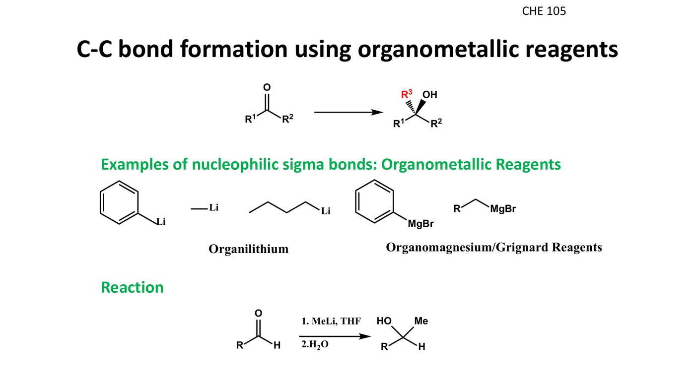

CHE105 · 第 10 章
有机金属试剂构建 C–C 键
Using Organometallic Reagents to Make C–C Bonds
虚线下划线为术语；悬停查看中文、英文与释义，完整词典见“术语”。
本章目录
本讲把有机金属试剂当成“被金属极化的碳负离子”：它既是很强的碱，又是很好的亲核试剂。前半讲怎么造出它，后半讲它怎样与 C=O 反应，把醇、羧酸的碳骨架拼出来。
本章要点
- C–金属键极性很强，碳带 δ−，因此有机金属试剂是亲核试剂，同时常常是强碱。
- 与水反应生成烷烃：pKa(H2O) = 15.74、pKa(CH4) = 50，Keq ≈ 1034.3，反应定量进行，所以第一步必须无水。
- 制备途径：卤代烃与金属直接反应（Grignard、有机锂）、末端炔去质子化、卤素-金属交换、转金属化。
- 与 CO2 反应得羧酸；与甲醛得伯醇；与其他醛得仲醇；与酮得叔醇。
- 加成机理统一为：R− 进攻羰基碳，形成四面体醇盐，第二步加水质子化。
- 产物反推是常考题型：由目标醇的取代级数反推该用哪种醛或酮。
- 醇可以氧化回醛、酮，构成“醇 ⇄ 羰基”的双向路线。
10.1 有机金属试剂：被金属极化的碳
有机金属试剂organometallic reagent是碳与金属直接成键的化合物，通式可写作 R–M。讲义的切入点是电负性：锂约 1.2、碳约 2.5，两者差得很远，C–Li 键因此强烈极化，电子云偏向碳，碳上带部分负电荷（δ−），金属带 δ+。镁的电负性同样远低于碳，C–Mg 键也有同样的极化方向。
这个极性决定了它的两副面孔。碳上的 δ− 使它可以去进攻缺电子的碳（亲核性）；而“碳负离子”本身是极强的碱，遇到任何能给出质子的物种都会抢先夺质子（碱性）。讲义在开头就把这两条并列写出：organometallics are nucleophilic and often strongly basic。后面所有反应都可以归到这两条中的一条。
需要注意，R–M 不是离子化合物，碳也并不真的带一整负电荷；“δ−”是极化描述。但用它来推反应方向已经足够：碳进攻 C=O 的碳，金属最终以 M+ 的形式与氧结合。
L10 slide 1、5–7
10.2 强碱的一面：为什么第一步必须无水
讲义用甲基锂与水给出定量论证。反应是 CH3Li + H2O → CH4 + LiOH。查 pKa：水的 pKa = 15.74，甲烷的 pKa = 50。酸碱平衡偏向生成更弱的酸，两侧 pKa 相差约 34 个单位，因此 Keq ≈ 1034.3——反应是定量反应quantitative reaction，几乎完全向右。
结论很实际：水会瞬间把有机金属试剂“杀死”，变成烷烃。所以讲义在讲羰基加成时特别标注：加水是第二步，第一步反应期间绝不能有水。同样的道理适用于任何带酸性氢的物种——醇、羧酸、胺、末端炔，都会与 R–M 反应。
这个副反应也解释了一类“看似没用”的合成：R–M 加质子源得到 R–H，正是把卤代烃变成烷烃的路线（讲义在产物清单里列了 alkanes）。它同时是考试里的常见陷阱：目标分子上有 −OH、−NH2、−COOH 时，不能直接对这些底物用有机金属试剂，否则试剂先被酸性氢消耗掉。

L10 slide 2、8、49–50
10.3 制备路线一：卤代烃与金属直接反应
最直接的制法是把卤代烃与金属放在一起，金属插入 C–X 键：
Grignard 试剂Grignard reagent写作 RMgX，镁插在碳与卤素之间，碳成为亲核端。有机锂试剂organolithium reagent写作 RLi，极性更强、碱性更强、反应更剧烈。讲义用两页分别给出 Grignard 与 RLi 的制备示例，说明这条路线对卤代烃的适用范围（不同卤素、不同烃基）。
制备时的共同前提仍是“无水无质子”：反应体系里若存在水或醇，生成的 R–M 会立刻被质子化。第 11 章讲酰氯时会再遇到同一个要求——这也是有机金属反应在操作上最一致的一条纪律。
L10 slide 46–48
10.4 制备路线二：去质子化、卤素-金属交换与转金属化
末端炔的去质子化。末端炔的 C–H 是 sp 杂化碳上的氢，s 成分高，电子离核近，负电荷更稳定，所以酸性远强于烷烃的 C–H（第 8 章的“杂化状态影响酸性”）。正因为如此，烷基锂一类的强碱可以把末端炔去质子化，生成炔基金属试剂，再用于后续加成。这是“用碱性制亲核试剂”的典型：被拔掉质子的碳变成亲核中心。
卤素-金属交换。把 R–X 与另一分子有机金属（通常是活性更高的有机锂）混合，金属与卤素“换位”，生成新的 R–Li 与新的 R'–X。交换的方向由两边碳负离子的相对稳定性决定——生成的碳负离子更稳定的一侧优先，这与“酸碱平衡偏向弱酸/弱碱”是同一条热力学逻辑。
转金属化。一种金属的有机衍生物与另一种金属的盐交换金属中心，得到目标金属试剂。讲义把它单列，是因为不同金属的“反应性”不同：换成反应性较温和的金属，可以让试剂只加成一次、不继续进攻后续产物，这在多步合成里很有用。
四条路线（直接插入、去质子化、卤素-金属交换、转金属化）解决的是同一个问题：把碳变成亲核的碳。区别只在原料与“拔电子”的方式。
L10 slide 49–57
10.5 与 CO2 反应：一步长出羧酸
CO2 是最简单的亲电羰基：中心碳缺电子，两侧氧把它拉得更缺。R–M 进攻 CO2 的碳，π 电子推向一个氧，得到羧酸根（RCOO−），金属作为 M+ 与氧成盐；第二步加酸质子化，得到羧酸carboxylic acid。
这条路线在合成上的意义是“加一个碳”：原来的 R 基团保留，末端多出一个 −COOH。讲义用两页示例展示不同 R 基（烷基、芳基）的情形，说明适用范围广。机理的文字步骤与箭头描述见 10.7，四类亲电体的加成共用同一套箭头画法，只是亲电体不同。
L10 slide 13–17
10.6 与醛反应：甲醛给伯醇，其他醛给仲醇
把亲电体从 CO2 换成甲醛（HCHO），进攻后得到的醇盐经质子化生成 R–CH2OH，即伯醇primary alcohol。原因是甲醛的羰基碳上只有两个氢，没有其他碳取代基，新形成的碳只连一个 R 基团，所以是伯醇。
换成其他醛 R'CHO，羰基碳上已有一个 R'，进攻后新碳连 R 与 R' 两个碳基团，得到 R–CH(OH)–R'，即仲醇secondary alcohol。讲义用多页示例覆盖不同醛的组合，并反复让学生练习“产物是仲醇还是叔醇”的判断。
这里有一条干净的对应关系：产物醇的取代级数 = 羰基碳上原有的碳取代基数 + 1。甲醛 0 个 → 伯醇；其他醛 1 个 → 仲醇；酮 2 个 → 叔醇。记住这条，比逐个背反应式可靠得多。

L10 slide 18–26
10.7 与酮反应：叔醇与统一的加成机理
酮的羰基碳上已有两个碳取代基，R–M 进攻后新碳连三个碳基团，质子化得到叔醇tertiary alcohol。讲义用三页示例展示对称酮与不对称酮的情形：不对称酮的两个面不等价，进攻可以从两面发生，得到两种非对映（或对映）关系的产物。
四类亲电体的机理完全同构，可以写成统一的两步。第一步（无水）：① R–M 的 C–M 键电子对移向碳，碳上的孤对进攻羰基碳；② C=O 的 π 电子对推向氧，氧带负电，形成四面体醇盐中间体alkoxide intermediate，金属 M+ 与氧配位。第二步（加水或加酸）：③ 水或 H3O+ 把质子交给氧负离子；④ 氧上形成 OH，得到醇。
画箭头时有三条纪律：箭头从 C–M 键（或碳上的孤对）出发指向羰基碳；第二支箭头从 C=O 的 π 键出发指向氧；质子化步骤的箭头从氧的孤对指向质子。不要把 R− 画成自由离子，也不要在第一步就写 H2O。
还有一条常被追问的“为什么只加一次”：加成产物是醇盐，氧上带负电、碳已变成 sp3 且没有可被进攻的 π 键，因此它不再是亲电体，第二分子试剂无处可攻。反应停在醇盐，等加水才变成醇。这条性质让醛、酮的加成可以定量地只加一当量；到第 11 章会看到，酯的情况不同——酯加成后还有一个能离去的烷氧基，故事会继续往下走。
Clean vector mechanism diagram in two panels: left panel shows R minus carbon of an organolithium attacking the carbonyl carbon of a ketone with a curved arrow from the C-M bond, a second curved arrow from the C=O pi bond to oxygen, giving a tetrahedral alkoxide with O minus and Li plus; right panel shows water protonating the alkoxide oxygen with a curved arrow, giving the tertiary alcohol and LiOH. Flat 2D, thin 1.5 px strokes, muted slate blue and warm grey palette, white background, English labels, no cartoon, no gradient, no shadow.
L10 slide 27–29、3–4、9–10
10.8 逆推设计：该用哪个醛、哪个酮
讲义把大量篇幅放在“Which aldehyde? Which ketone?”这类题上，因为合成题几乎都从产物倒推。方法是把目标醇的 C–OH 碳“拆开”：在羟基碳上断开一条 C–C 键，断下的碳基团来自有机金属试剂，剩下的羰基部分来自醛或酮。
操作顺序是：① 数羟基碳上连了几个碳基团；② 若为伯醇，羰基部分必须是甲醛；③ 若为仲醇，羰基部分是醛，R 基团的选择决定哪一侧来自试剂；④ 若为叔醇，羰基部分是酮，且有多种断键方式，要选原料最易得的那一种。讲义用多页示例演示同一目标分子的不同拆法，并给出“市售可得试剂”的清单来限制选择——合成设计不只要求“能通”，还要求原料买得到。
| 目标醇 | 羟基碳上的碳基团数 | 羰基原料 | 另一部分来自 |
|---|---|---|---|
| 伯醇 RCH2OH | 1 | 甲醛 HCHO | R–M |
| 仲醇 R2CHOH | 2 | 醛 RCHO | R'–M |
| 叔醇 R3COH | 3 | 酮 R2C=O | R'–M |
| 羧酸 RCOOH | — | CO2 | R–M |
Clean vector reaction map with four horizontal rows: carbon dioxide plus R-M giving a carboxylic acid, formaldehyde plus R-M giving a primary alcohol, a general aldehyde RCHO plus R-M giving a secondary alcohol, and a ketone R2CO plus R-M giving a tertiary alcohol, each row drawn as a simple skeletal formula with the new C-C bond highlighted in a darker tone and the alcohol class labeled on the right. Flat 2D, thin 1.5 px strokes, muted slate blue and warm grey palette, white background, English labels, no cartoon, no gradient, no shadow.
L10 slide 30–40
10.9 反向路线：把醇氧化回醛、酮
讲义最后给出反向箭头：醇的氧化oxidation of alcohols。伯醇氧化得到醛，继续氧化得到羧酸；仲醇氧化得到酮。讲义以乙醇的氧化为例（ethanol oxidation），并配了动画链接，说明这条路线与前面的加成正好互逆：加成把 C=O 变成 C–OH，氧化把 C–OH 变回 C=O。
把两条路线接起来，就得到一条常用的合成思路：先用有机金属试剂把羰基变成醇（建立碳骨架），再把醇氧化回羰基（调整氧化态），得到的酮或醛又可以接受下一轮加成。碳骨架在每一步都被保留，氧化态则按需要来回切换。
讲义没有在提取文本中给出氧化所用的具体试剂与条件，也没有讨论叔醇的情形，这部分属于资料缺口，复习时以“伯醇→醛→羧酸、仲醇→酮”的方向性结论为准。
L10 slide 41–45、58